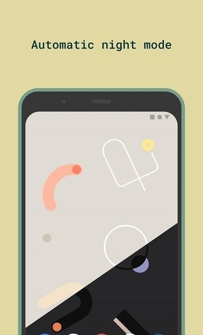
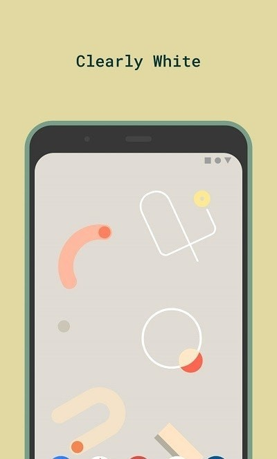

Doodle 用了一年多，从 Pixel 风到「息屏惊喜」
从第一次把它设成壁纸到现在，Material You 的新鲜感褪去后，真正留下来的是随机轮换和那些当初没注意到的小设计。
装 Doodle 是去年冬天的事了——当时手上那台 Android 12 机器刚换掉了用了两年的静态壁纸，Material You 的取色系统让我觉得「动态壁纸终于能跟系统主题搭了」，搜了一圈开源动态壁纸，它在 GitHub 上星星数和更新频率都还算靠谱，从官网了解了一下就装了。从 5.3.x 一路更到现在的 5.6.0，快一年半了。
当初为什么选它？坦白说就两个理由：开源、不依赖 Play 服务。国产定制系统上 Play 服务时有时无，装过几个带 Play 依赖的动态壁纸，偶发的崩溃和服务缺失提示很烦。Doodle 的三个渠道里我选的是 GitHub 发布页，从下载入口拿的，想第一时间拿新版，偶尔也会回退一下——5.4.0 那次主题色卡加了黄色和青绿，我是第一时间更的。
越用越顺手的：随机轮换
刚装好那半个月我基本没碰随机功能——觉得 Material You 取色出来那套配色已经够好看了，没必要让它乱换。后来某次翻设置翻到外观页，试了一下「息屏时触发」，从此就没再关掉过。

随机模式的设计选择区有个我刚用了半年才发现的小坑：列表可以横向滚动，右侧还有更多设计。我之前以为随机池只有屏幕上那几张，调了好几次「为什么随机到的总是那几个」，后来才知道是没往右划。应用内置 FAQ 里居然直接写了这个问题——开发者自己也知道这个设计不直观。后来去Doodle文档翻了一下，才知道横滚列表和随机范围的坑不止这一个。
现在的习惯是勾选三套合集里各挑两三张丢进随机池，息屏触发，配合跟随系统的亮暗模式。白天亮色系随机、晚上暗色系随机，亮屏看到的永远是新壁纸，但整体配色又不跳——Material You 取色系统把这层和谐感兜住了。这个组合是我目前用过最不折腾的动态壁纸方案：设好之后基本不用管，但每天都有新东西看。
越用越烦的：省电模式的冻结
随机轮换有个「该换了但没换」的老问题，MIUI 和 ColorOS 的激进省电策略会把 Doodle 的后台任务杀掉，息屏触发的定时任务就不会跑了。这个问题我碰到过至少三四次——前一天明明开着随机，第二天早上亮屏发现还是昨天的壁纸。
排查路径我现在已经熟得能闭着眼走：先看系统省电模式有没有把 Doodle 设为「严格限制后台」，如果有就改成「无限制」；再看应用自启动有没有开。两个都设好之后基本就稳定了，但每次系统大版本更新，省电策略又会重置一遍，要重新过一遍。这个问题不是 Doodle 独有的，但它作为动态壁纸常驻服务的属性，让它对后台存活的依赖比普通应用高很多。
当初没发现、现在每天离不开的：隐藏桌面图标
壁纸设好、随机池也调完之后，桌面就不再需要 Doodle 的图标了——除非我想换设计或调参数，否则不会打开它。隐藏图标功能正好服务这种「设定后即忘」的习惯，开启后桌面图标消失，但系统动态壁纸选择器里的入口还在。

不过这个功能在部分系统上会直接显示「因系统限制不再受支持」，诚实降级不是故障，开关无效时图标照常显示。我之前在一台老机器上试过，ColorOS 的动态壁纸选择器藏得特别深——设置 → 壁纸与个性化 → 更多壁纸，找了好一阵才摸到。后来用系统全局搜索「动态壁纸」直接定位，才是正解。
当初高估了、现在看淡了的：Material You 取色
刚装 Doodle 的时候我觉得 Material You 取色是它最大的卖点——把锁屏壁纸的主色调抽出来生成一整套系统主题色，连设置面板里的 accent 色都跟着变。但用了一年多之后我发现，Material You 更像是个「锦上添花」的效果，而不是「非它不可」的理由。
取色系统偶尔会抽风——锁屏壁纸换了一套颜色很跳的图，系统主题就跟着变得很不协调，反过来又影响 Doodle 壁纸上的配色观感。我现在更倾向于手动选 Doodle 提供的预设配色，而不是完全交给系统取色。说个反直觉的：手动配色的稳定性反而比 Material You 更高，因为系统取色受锁屏壁纸影响，锁屏换一张就全变了。
去留结论
会不会卸载？目前没有这个计划。但我能列出几个「如果哪天出现就考虑换掉」的信号：随机轮换在息屏触发下连续一周都不动、新安卓版本适配延迟超过两个月、或者设置面板的重置功能用了一次之后还出问题——它那个「Reset all settings」一键清干净所有参数，甚至连直启专用的那块特殊存储一起清，当初调乱参数的时候用它救过我一次，至今为止的印象都还好。
用了一年半，Doodle 给我的最大感受是「稳」——没有惊艳的大功能，但也没有让人崩溃的 bug。每天亮屏的那一下新壁纸，已经成了我对动态壁纸的最低期待线。
这套资料开源友好，在 GitHub、Gitee 和 GitCode 三个仓库都有同步维护，国内访问想更快就从 Gitee 或 GitCode 走。